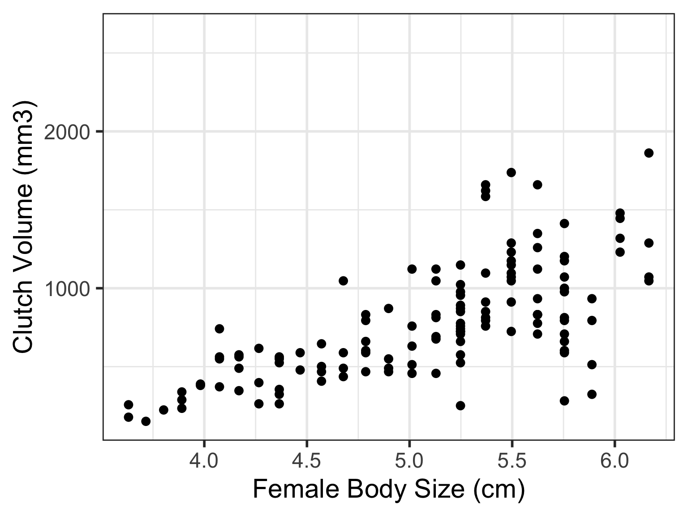
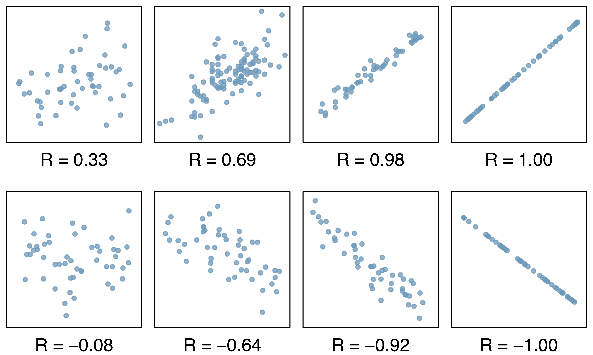
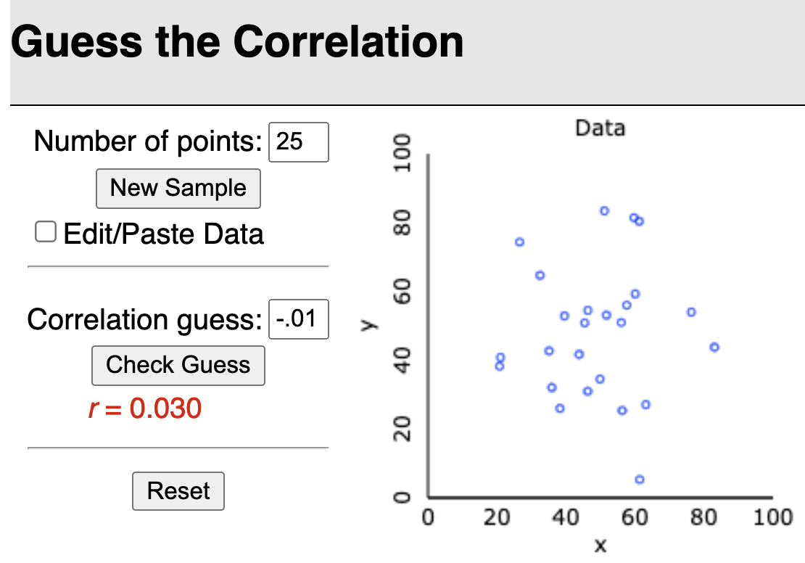
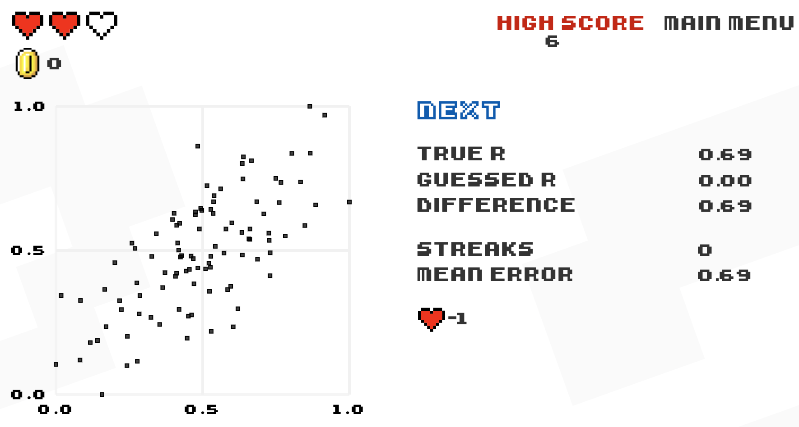
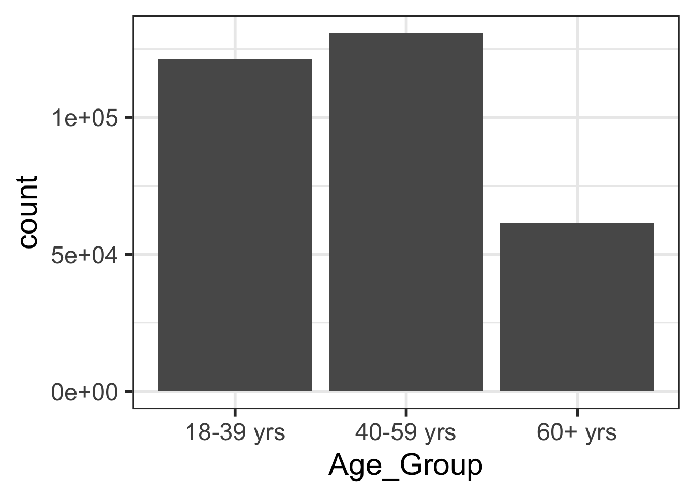
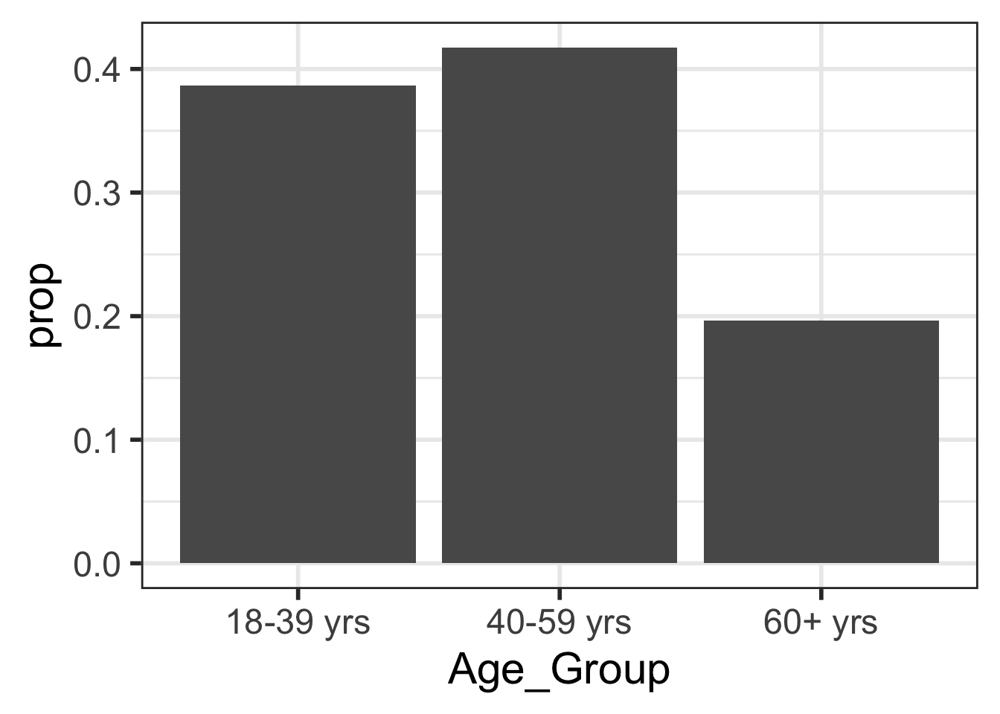

Lesson 8: Data visualization of two variables
Learning Objectives
Visualize relationships between two numeric variables using scatterplots and determine their correlation
Visualize relationships between two categorical variables using contingency tables and segmented barplots
Visualize relationships between a categorical variable and a numeric variable using side-by-side boxplots, density plots, and ridgeline plots
Where are we?

Relationships between two variables
- Many studies are motivated by a researcher examining how two or more variables are related
Example questions about relationships:
- Do the values of one variable increase as the values of another decrease?
- Do the values of one variable tend to differ by the levels of another variable?
- Today we are introducing summarization and data visualization methods for exploring and summarizing relationships between two variables
- Approaches vary depending on whether the two variables are:
- Both numerical
- Both categorical
- One numerical and one categorical
We often identify a response variable from our research question
Response Variable
A response variable is defined by the particular research question a study seeks to address
- It measures the outcome of interest in the study
Explanatory Variable
A study will typically examine whether the values of a response variable differ as values of an explanatory variable change, and if so, how the two variables are related.
- A given study may examine several explanatory variables for a single response variable
Sometimes we’re interested in viewing the relationship between our response variable and explanatory variable(s)
Sometimes we’re just interested in viewing the relationship between explanatory variables
Poll Everywhere Question 1
Learning Objectives
- Visualize relationships between two numeric variables using scatterplots and determine their correlation
Visualize relationships between two categorical variables using contingency tables and segmented barplots
Visualize relationships between a categorical variable and a numeric variable using side-by-side boxplots, density plots, and ridgeline plots
Scatterplots
- Scatterplots provide case-by-case view of the relationship between two numerical variables
- We can make a scatterplot of clutch volume vs. body size, with clutch volume on the y-axis and body size on the x-axis
- Each point represents an observation (egg clutch) with its measurement for clutch volumn and body size of parent

Describing associations between 2 numerical variables
Two variables \(x\) and \(y\) are
Positively associated if \(y\) increases as \(x\) increases
Negatively associated if \(y\) decreases as \(x\) increases
- If there is no association between the variables, then we say they are uncorrelated or independent
The term “association” is a very general term
- Can be used for numerical or categorical variables
- Not specifically referring to linear associations
Female body size and clutch volume are positively associated with each other
(Pearson) Correlation coefficient (\(r\))
- \(r = -1\) indicates a perfect negative linear relationship: As one variable increases, the value of the other variable tends to go down, following a straight line
- \(r = 0\) indicates no linear relationship: The values of both variables go up/down independently of each other
- \(r = 1\) indicates a perfect positive linear relationship: As the value of one variable goes up, the value of the other variable tends to go up as well in a linear fashion
- The closer \(r\) is to ±1, the stronger the linear association

Poll Everywhere Question 2
(Pearson) Correlation coefficient (\(r\)): formula
The (Pearson) correlation coefficient of variables \(x\) and \(y\) can be computed using the formula \[r = \frac{1}{n-1}\sum_{i=1}^{n}\Big(\frac{x_i - \bar{x}}{s_x}\Big)\Big(\frac{y_i - \bar{y}}{s_y}\Big)\] where
- \((x_1,y_1),(x_2,y_2),...,(x_n,y_n)\) are the \(n\) paired values of the variables \(x\) and \(y\)
- \(s_x\) and \(s_y\) are the sample standard deviations of the variables \(x\) and \(y\), respectively
- We can use
cor()in R to calculate this!
cor(frog$body.size, frog$clutch.volume, use = "pairwise.complete.obs")[1] 0.6755435Guess the correlation game!
Rossman & Chance’s applet

Tracks performance of guess vs. actual, error vs. actual, and error vs. trial
Or, for the Atari-like experience

Learning Objectives
- Visualize relationships between two numeric variables using scatterplots and determine their correlation
- Visualize relationships between two categorical variables using contingency tables and segmented barplots
- Visualize relationships between a categorical variable and a numeric variable using side-by-side boxplots, density plots, and ridgeline plots
From Lesson 4: Contingency tables
- We can start looking at the contingency table for hypertension for different age groups
- Contingency table: type of data table that displays the frequency distribution of two or more categorical variables
| Age Group | Hypertension | No Hypertension | Total |
|---|---|---|---|
| 18-39 years | 8836 | 112206 | 121042 |
| 40-59 years | 42109 | 88663 | 130772 |
| 60+ years | 39917 | 21589 | 61506 |
| Total | 90862 | 222458 | 313320 |
From Lesson 4: Probability tables
| Age Group | Hypertension | No Hypertension | Total |
|---|---|---|---|
| 18-39 years | 0.0282 | 0.3581 | 0.3863 |
| 40-59 years | 0.1344 | 0.2830 | 0.4174 |
| 60+ years | 0.1274 | 0.0689 | 0.1963 |
| Total | 0.2900 | 0.7100 | 1.0000 |
Joint probability: intersection of row and column
Marginal probability: row or column total
We can work towards visualizing the data in contingency and probability tables
Last time: Barplots
Counts (below) vs. percentages (right)
ggplot(data = hyp_data,
aes(x = Age_Group)) +
geom_bar()
ggplot(data = hyp_data,
aes(x = Age_Group)) +
geom_bar(aes(y = stat(prop),
group = 1))
Barplots with 2 variables: segmented bar plots
- Way of visualizing the information from a contingency table
Poll Everywhere Question 3
Barplots with 2 variables: side-by-side bar plots
Learning Objectives
Visualize relationships between two numeric variables using scatterplots and determine their correlation
Visualize relationships between two categorical variables using contingency tables and segmented barplots
- Visualize relationships between a categorical variable and a numeric variable using side-by-side boxplots, density plots, and ridgeline plots
Visualizing relationships between numerical and categorical variables
Useful visualizations for directly comparing how the distribution of a numerical variable differs by category:
- Side-by-side boxplots
- Side-by-side boxplots with data points
- Density plots by group
- Ridgeline plot
We need to introduce a new dataset for this
- Study investigating whether ACTN3 genotype at a particular location (residue 577) is associated with change in muscle function
- Categorical variable: genotypes (CC, TT, CT)
- Numeric variable: Muscle function, measured as percent change in non-dominant arm strength
- We can start the investigation by plotting the relationship
Side-by-side boxplots
- We can look at the boxplot of percent change for each genotype
Side-by-side boxplots with data points
- We can look at the boxplot of percent change for each genotype with points shown so we can see the distribution of observations better
Density plots by group
- Allows us to see the densities of percent change for each genotype
Ridgeline plot
- Overlapped densities were easy enough to see with 3 genotypes
- If you have many categories, a ridgeline plot might make it easier to see